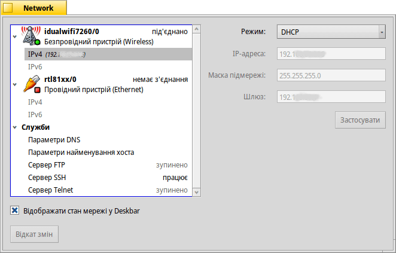

Network (Мережа)
| Deskbar: | ||
| Розташування: | /boot/system/preferences/Network | |
| Налаштування: | /boot/system/settings/network/ |
Налаштування мережі – це універсальна панель з настройками для всіх доступних мережевих пристроїв і служб. Ліворуч знаходиться список Ваших пристроїв і служб, праворуч – інформація або настройки для вибраного елемента списку.
У нижній частині Ви знайдете чекбокс опції . Кнопка повертає настройки, які були активні на момент запуску панелі.
Пристрої
Тут ми бачимо, безпровідний пристрій, який використовує драйвер idualwifi7260. У спливаючому меню виберіть мережу WLAN для під'єднання. Поряд з кожною назвою WLAN у меню Ви побачите невелику піктограму, яка показує рівень сигналу.
Після вибору мережі, Haiku буде намагатися під'єднатися до неї автоматично при кожному завантаженні. Виберіть пункт і адаптер буде намагатися під'єднатися до мережі WLAN з найкращим рівнем сигналу.
Якщо Ви під’єднуєтеся до захищеної мережі, Вам буде запропоновано ввести пароль та визначити режим з'єднання, одноразовий або постійний, що дозволить зберегти пароль і не вводити його в майбутньому.
Кнопки нижче дозволяють пристрій, або до мережі.
Під пристроєм Ви знайдете список доступних протоколів IPv4 та IPv6:
У спливаючому меню вибирається режим в якому будуть задані найважливіші параметри мережі: , та . Ви можете вибрати пункт , щоб отримати конфігурацію з Вашої мережі (маршрутизатора, тощо) або вказати їх самостійно при виборі пункту . Коли введення необхідних параметрів буде завершено, натисніть кнопку .
Параметри для провідного пристрою аналогічні, за винятком спливаючого меню з'єднання з мережею WLAN, що очевидно.
Служби
Параметри DNS
Якщо Ви використовуєте DHCP, IP-адреса DNS-сервера та домен надаються Вашою мережею (маршрутизатором, тощо). Ви можете додавати або вилучати додаткові DNS-сервери, змінювати їхні пріоритети переміщаючи їх у списку за допомогою кнопок праворуч від нього.
Кнопка активує Ваші нові налаштування.
Сервери FTP, SSH, Telnet
У своєму дистрибутиві Haiku має декілька серверів, які Ви можете запустити кнопкою або зупинити кнопкою . У правій частині вікна, Ви знайдете інформацію, на яку слід звернути увагу: FTP та Telnet сервери є незахищеними і незашифрованими. За замовчуванням вони вимкнені. Вмикати їх слід лише тоді, коли Ви усвідомлюєте ризики безпеки.
Файли налаштувань
Файли з налаштуваннями мережі знаходяться в каталозі /system/settings/network/. Зазвичай Вам не потрібно турбуватися про них, за винятком випадків, коли необхідно їх видалити, щоб почати з чистого аркуша після того, як все пішло не так, як треба…
Однак один файл може бути дуже корисним, особливо при роботі з терміналу. Файл hosts дозволяє визначати псевдоніми для певних IP-адрес у мережі. Наприклад:
127.0.0.1 localhost #loopback 192.168.178.3 NAS #Synology 192.168.178.102 XIOS #Mediaplayer
Окрім петлі на локальний хост, у мене є IP-адреса сховища Synology з псевдонімом «NAS» та медіаплеєра з псевдонімом «XIOS». Щоб розпочати сеанс FTP з мережевим сховищем, мені не потрібно запам'ятовувати його IP-адресу, я можу просто ввести:
ftp NAS